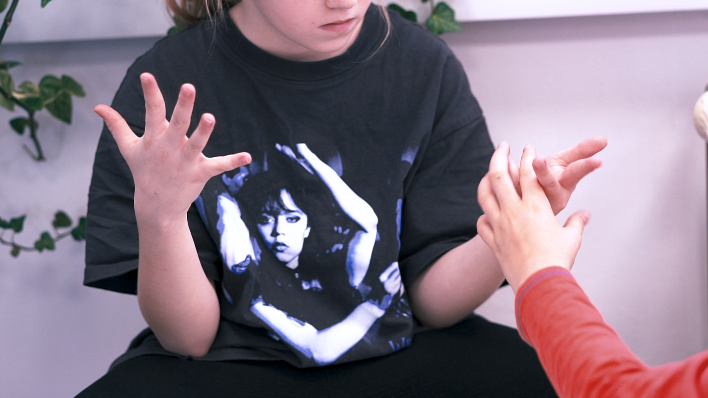

7:30Začátek dne
Ranní družina
Klidný příchod, hra, čas pro tlumený přechod z domova do školního dne. Děti by měly do školy dorazit nejpozději do 8:10.

Den ve FLOW se točí kolem výzev z reálného života. Děti ví proč se učí a hned to uplatňují. Ranní kruh, 90minutové bloky, tři zóny ve třídě, pedagog a sdílený asistent. Žádné zvonění, žádný spěch.

Děti se neučí pro test. Učí se pro skutečný svět — a každou znalost si hned vyzkouší v projektu.
— pedagogický přístup FLOW
Pevná struktura, klidný rytmus. U každého bloku vědomě budujeme konkrétní dovednost.
Klidný příchod, hra, čas pro tlumený přechod z domova do školního dne. Děti by měly do školy dorazit nejpozději do 8:10.
Společné naladění, plán dne, sdílení „co se povedlo / co mě trápí“ a jeden malý osobní cíl. Každé dítě má prostor být slyšeno dřív, než začne výuka.
Výuka, klid/relax a hluboká práce. Děti se mezi zónami pohybují podle úkolu a vlastní potřeby. U dětí vždy minimálně dva dospělí, tedy hlavní pedagog se sdíleným asistentem nebo native speakerem.
Klidová pauza s občerstvením. Děti dostávají prostor vystoupit z práce, navázat sociální kontakty, vrátit se k učení s čerstvou energií.
Pokračování projektů nebo nová předmětová náplň (matematika, čeština, angličtina, projekty). Stejná struktura — bez spěchu, individuální tempo, vědomá podpora.
Klidné společné stravování ve vlastní jídelně. Externí dodavatel kvalitní stravy, pokrytí dietních variant. Po jídle volný čas — venku, ve hře, v klidové zóně.
Závěr výuky — projekty, prezentace, reflexe dne. Děti hodnotí svou práci, sdílí výstupy s ostatními. Restorativní rozhovory pokud byl konflikt.
Volný čas nebo zájmové aktivity — sport, hudba, výtvarka, jazyky. Klidné prostředí, prostor na hru i odpočinek. Družina dostupná pro všechny rodiny, kroužky podle volby.
Pevné základy + projekty + jazyk + technologie + wellbeing. Detail každé oblasti najdete na samostatné stránce.
Vše se točí kolem výzev z reálného života. Hledání informací → prototyp → prezentace → reflexe. 10 projektů ročně v 10 typech vztahů.
Kurikulum →Native speakers denně. Cambridge framework + CLIL — integrované krátké aktivity. Hlavní výuka v češtině, postupný rozvoj poslechu a mluvení.
Angličtina →Každodenní lekce čtení, psaní, matematiky. Hejného + klasická metoda — to nejlepší z obou. Comenia Script písmo. Jistota a plynulost.
Detail →Programování od 1. třídy (Scratch → Python), robotika, 3D modelování, AI „AI dětem“. ICT specialisté plánují s učiteli — technologie podporuje myšlení.
IT a digital →Ranní kruh, klidové koutky, restorativní rozhovory. Interní speciální pedagožka. Dva dospělí ve třídě. Wellbeing jako rytmus dne, ne extra předmět.
Wellbeing →Vedeme děti k sebevědomé komunikaci a řešení problémů. Schopnost přenést znalosti do nových situací reálného života.
Zvídavý
Tvořivý
Spolupracující
Ohleduplný
Kompetentní
Krátký formulář — 5 polí, do 1 pracovního dne potvrdíme nebo navrhneme alternativu.